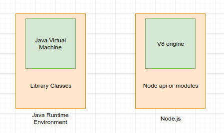
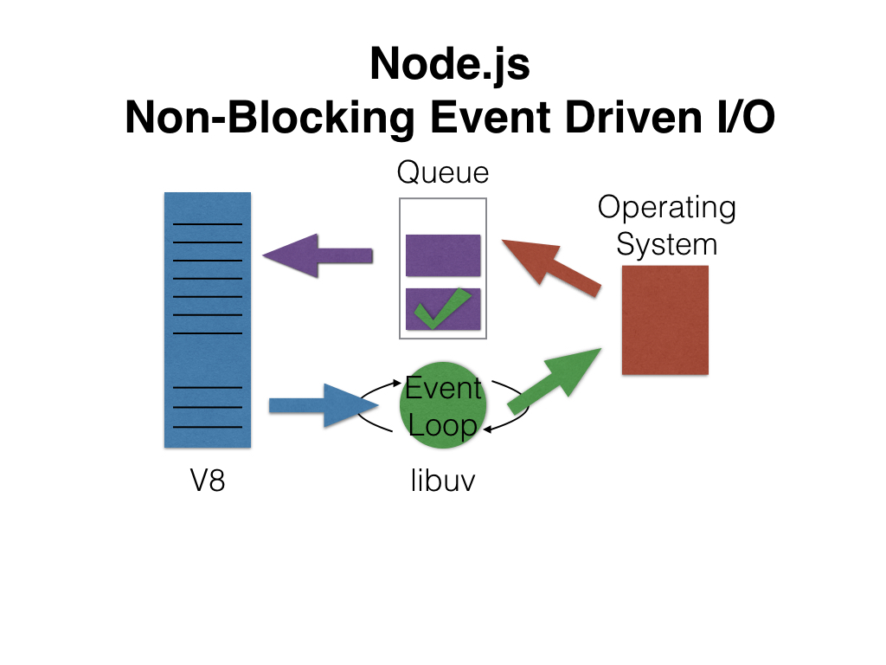

# Node.js
Session 1: Introduction & setup of node.js
Presenter: Abhishek Kumar
# Syllabus
- Introduction to Node JS
- What is Node JS, Node.js Process Model
- Install Node.js on System
- Working with multiple versions of node.js
- Working in REPL, Node JS Console
# INTRODUCTION TO NODE.JS
# Simple defn.
Node.js is 'server-side JavaScript'.
# Complex defn.
Node.js is a
- high-performance network applications framework,
- well optimized for high concurrent environments.
# Can be used via CLI
It’s a command line tool.
# File → .js ≠ JavaScript
In Node.js, ‘.js’ doesn’t mean that its solely written JavaScript.
# Language contribution
JS → 40%
C++ → 60%
# From nodejs.org
‘Nodes goal is to provide an easy way to build scalable network programs’
# Node → v10.15.3 LTS
Recommended for most users
# Node → v12.2.0 Current
Includes latest Features
Recommended for technocrats
It is Open Source.
# Runs on systems
√ Linux
√ Mac
√ Windows
# Performance on
now → Linux > Windows
future → Linux = Windows
# WHAT IS NODE JS?
# Node.js was created by
*Ryan Dahl* in *2009*.
# Node.js is a JavaScript runtime
built on *Chrome’s V8* JavaScript engine.
# What is V8?
V8 is an open source JavaScript engine developed by *Google*.
Its written in C++ and is used in *Google Chrome* browser.
# If you know Java, here’s a little analogy

# Node.js uses
- *event-driven*
- *non-blocking I/O model*
# Which makes it
- *lightweight*
- *efficient*
# Node's event-driven I/O

# Blocking I/O (left) vs Non-Blocking I/O (right)
# It makes use of
- event-loops via JavaScript’s
- callback functionality to implement
- the non-blocking I/O.
# Traditional - How Does It Work?
# Node.js - How Does It Work?
# NODE.JS PROCESS MODEL
# Traditional Web Server Model
 # Asynchronous web server model
using Node.js
# Asynchronous web server model
using Node.js
 # Programs for Node.js
are written in JavaScript
but not in the same JavaScript we are use to.
There is no DOM implementation provided by Node.js
# Means
You can't do this
var element = document.getElementById('elementId');
Everything inside Node.js runs in a *single-thread*.
# INSTALL NODE.JS ON SYSTEM
# How to install Node.js?
On Windows
# Step 1
1. Go to the site https://nodejs.org/en/download/
2. Download the necessary binary files.
# In our example,
We are going to the download the 32-bit setup files for Node.js.
# Programs for Node.js
are written in JavaScript
but not in the same JavaScript we are use to.
There is no DOM implementation provided by Node.js
# Means
You can't do this
var element = document.getElementById('elementId');
Everything inside Node.js runs in a *single-thread*.
# INSTALL NODE.JS ON SYSTEM
# How to install Node.js?
On Windows
# Step 1
1. Go to the site https://nodejs.org/en/download/
2. Download the necessary binary files.
# In our example,
We are going to the download the 32-bit setup files for Node.js.
 # Step 2
Double click on the downloaded *.msi* file to start the installation.
Click the Run button in the first screen to begin the installation.
# Step 2
Double click on the downloaded *.msi* file to start the installation.
Click the Run button in the first screen to begin the installation.
 # Step 3
In the next screen, click the "Next" button to continue with the installation
# Step 3
In the next screen, click the "Next" button to continue with the installation
 # Step 4
In the next screen Accept the license agreement and click on the Next button.
# Step 4
In the next screen Accept the license agreement and click on the Next button.
 # Step 5
In the next screen,
- choose the location where Node.js needs to be installed and
- then click on the Next button.
# Step 5
In the next screen,
- choose the location where Node.js needs to be installed and
- then click on the Next button.

- First enter the file location for the installation of Node.js.
This is where the files for Node.js will be stored after the installation.
- Click on the Next button to proceed ahead with the installation.
# Step 6
Accept the default components and click on the next button.
 # Step 7
In the next screen, click the Install button to start the installation.
# Step 7
In the next screen, click the Install button to start the installation.
 # Step 8
Click the Finish button to complete the installation.
# Step 8
Click the Finish button to complete the installation.
 # WORKING WITH MULTIPLE VERSIONS OF NODE.JS
# Need for multiple versions of node.js
Why do we need them at all?
# Due to situations
There are situations where the ability to switch between different versions of Node.js can be very useful.
# For example
If you want to test a module you're developing with the latest bleeding edge version
without uninstalling the stable version of node, this utility can help.
# AngularJS application
run on → Node.js version 9
it crashes and causes weird bugs if it’s not
# React application
needs → Node version 10 or above
to take advantage of all the ES6 and beyond features.
# Node.js’ package ecosystem
*NPM* → is the largest ecosystem of open source libraries in the world.
# Deprecated solution
Earlier their was node module that could be installed like
npm install nvm
but that would require node.js to be pre-installed
# Node Version Manager (nvm) for Linux
NVM is a Simple bash script to manage multiple active node.js versions.
https://github.com/nvm-sh/nvm
# Alternative
I personally use *n* on macOS
https://github.com/tj/n
because of no subshells, no profile setup, no convoluted API, just simple bash
but *n* is not supported natively on Windows.
# nvm vs n
nvm keeps the global node modules completely separate from other versions
n keeps them global that is re-usable across versions
# Node Version Manager (nvm) for Windows
To manage multiple installations of node.js on a Windows computer
nvm, with an installer
node 4+ is supported
https://github.com/coreybutler/nvm-windows
# NVM for Windows vs Linux
This version of nvm has no dependency on node
It's written in Go, instead of .bat file
It doesn't rely on having an existing node installation.
# Control mechanism
1. modifying the system PATH any time you switch versions, or bypass it by using a .bat file to mimic the node executable and redirect accordingly
2. putting the symlink in the system PATH, then updating its target to the node installation directory you want to use
# Usage of NVM
# WORKING WITH MULTIPLE VERSIONS OF NODE.JS
# Need for multiple versions of node.js
Why do we need them at all?
# Due to situations
There are situations where the ability to switch between different versions of Node.js can be very useful.
# For example
If you want to test a module you're developing with the latest bleeding edge version
without uninstalling the stable version of node, this utility can help.
# AngularJS application
run on → Node.js version 9
it crashes and causes weird bugs if it’s not
# React application
needs → Node version 10 or above
to take advantage of all the ES6 and beyond features.
# Node.js’ package ecosystem
*NPM* → is the largest ecosystem of open source libraries in the world.
# Deprecated solution
Earlier their was node module that could be installed like
npm install nvm
but that would require node.js to be pre-installed
# Node Version Manager (nvm) for Linux
NVM is a Simple bash script to manage multiple active node.js versions.
https://github.com/nvm-sh/nvm
# Alternative
I personally use *n* on macOS
https://github.com/tj/n
because of no subshells, no profile setup, no convoluted API, just simple bash
but *n* is not supported natively on Windows.
# nvm vs n
nvm keeps the global node modules completely separate from other versions
n keeps them global that is re-usable across versions
# Node Version Manager (nvm) for Windows
To manage multiple installations of node.js on a Windows computer
nvm, with an installer
node 4+ is supported
https://github.com/coreybutler/nvm-windows
# NVM for Windows vs Linux
This version of nvm has no dependency on node
It's written in Go, instead of .bat file
It doesn't rely on having an existing node installation.
# Control mechanism
1. modifying the system PATH any time you switch versions, or bypass it by using a .bat file to mimic the node executable and redirect accordingly
2. putting the symlink in the system PATH, then updating its target to the node installation directory you want to use
# Usage of NVM
 # Working in REPL
# NODE JS CONSOLE
# The console module
provides a simple debugging console that is similar to the JavaScript console mechanism provided by web browsers.
# The module exports 2 specific components:
- Console class
- global console instance
# Console class
A Console class with methods such as
- console.log()
- console.error()
- console.warn()
that can be used to write to any Node.js stream.
# Global console instance
A global console instance configured to write to
- process.stdout
- process.stderr
The global console can be used without calling require('console').
# Example using the global console:
console.log('hello world');
// Prints: hello world, to stdout
console.log('hello %s', 'world');
// Prints: hello world, to stdout
console.error(new Error('Whoops, something bad happened'));
// Prints: [Error: Whoops, something bad happened], to stderr
const name = 'Will Robinson';
console.warn(`Danger ${name}! Danger!`);
// Prints: Danger Will Robinson! Danger!, to stderr
# Example using the Console class:
const out = getStreamSomehow();
const err = getStreamSomehow();
const myConsole = new console.Console(out, err);
myConsole.log('hello world');
// Prints: hello world, to out
myConsole.log('hello %s', 'world');
// Prints: hello world, to out
myConsole.error(new Error('Whoops, something bad happened'));
// Prints: [Error: Whoops, something bad happened], to err
const name = 'Will Robinson';
myConsole.warn(`Danger ${name}! Danger!`);
// Prints: Danger Will Robinson! Danger!, to err
# More info on console
https://nodejs.org/api/console.html
The End
# Working in REPL
# NODE JS CONSOLE
# The console module
provides a simple debugging console that is similar to the JavaScript console mechanism provided by web browsers.
# The module exports 2 specific components:
- Console class
- global console instance
# Console class
A Console class with methods such as
- console.log()
- console.error()
- console.warn()
that can be used to write to any Node.js stream.
# Global console instance
A global console instance configured to write to
- process.stdout
- process.stderr
The global console can be used without calling require('console').
# Example using the global console:
console.log('hello world');
// Prints: hello world, to stdout
console.log('hello %s', 'world');
// Prints: hello world, to stdout
console.error(new Error('Whoops, something bad happened'));
// Prints: [Error: Whoops, something bad happened], to stderr
const name = 'Will Robinson';
console.warn(`Danger ${name}! Danger!`);
// Prints: Danger Will Robinson! Danger!, to stderr
# Example using the Console class:
const out = getStreamSomehow();
const err = getStreamSomehow();
const myConsole = new console.Console(out, err);
myConsole.log('hello world');
// Prints: hello world, to out
myConsole.log('hello %s', 'world');
// Prints: hello world, to out
myConsole.error(new Error('Whoops, something bad happened'));
// Prints: [Error: Whoops, something bad happened], to err
const name = 'Will Robinson';
myConsole.warn(`Danger ${name}! Danger!`);
// Prints: Danger Will Robinson! Danger!, to err
# More info on console
https://nodejs.org/api/console.html
The End